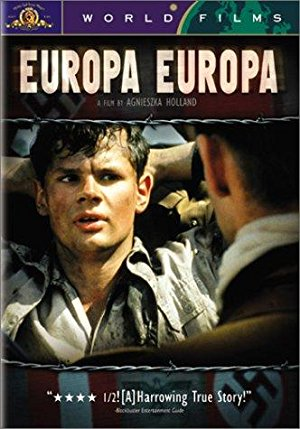

Season 40 (2005-2006)
For our 40th anniversary season we have picked twelve of the best films from our previous 39 seasons!
-
September 11, 2005Directed by Billy Wilder; Starring William Holden, Gloria Swanson, Erich von Stroheim, Nancy Olson
Sunset Blvd.
 (First screened during our 1979-80 season)
(First screened during our 1979-80 season)
USA, 1950, 110 min, B&W, Not Rated
The legendary Hollywood drama about faded silent screen star Norma Desmond (Swanson) living in the past with her butler, who shelters her from the present. Joe Gillis (Holden), a bankrupt screenwriter, hides from car repossessors in the garage of Desmond's mansion. Desmond discovers him and takes Joe in, in exchange for rewriting her hopeless "comeback" screenplay. This bitter, funny and fascinating film won Oscars for Best Screenplay and Best Score. Roger Ebert said Sunset Boulevard "remains the best drama ever made about movies because it sees through the illusions, even if Norma doesn't."
Read Roger Ebert's review of Sunset Blvd. at Great Movies. -
October 9, 2005Directed by Henri-Georges Clouzot; Starring Simone Signoret, Véra Clouzot, Paul Meurisse, Charles Vanel
Diabolique (Les diaboliques)
(Screened during our 1968-69 and 1985-86 seasons)
France, 1955, 117 min, B&W, Not Rated, French w/subtitles
The wife and mistress of a sadistic boarding school headmaster plot to kill him. They drown him, dumping the body in the school's filthy swimming pool. But when the pool is drained, the body is no longer there. This classic thriller builds slowly with almost unbearable suspense to its dramatic conclusion. Charles Vanel's portrayal of Inspector Richet was said to have inspired Peter Falk's Columbo.
-
 November 13, 2005Directed by Akira Kurosawa; Starring Tatsuya Nakadai, Tsutomu Yamazaki, Ken'ichi Hagiwara, Jinpachi Nezu
November 13, 2005Directed by Akira Kurosawa; Starring Tatsuya Nakadai, Tsutomu Yamazaki, Ken'ichi Hagiwara, Jinpachi Nezu
Kagemusha
(First screened during our 1981-82 season)
Japan/USA, 1980, 162 min, Color, PG, Japanese w/subtitles
When a powerful warlord in 16th-century Japan dies, a poor thief is recruited to secretly impersonate the deceased ruler, whose throne is coveted by others. Although promised that he will be spared execution, the thief finds difficulty in living up to his role, and clashes with the spirit of the warlord during turbulent times in the kingdom.
-
 December 11, 2005Directed by Jean Renoir; Starring Marcel Dalio, Nora Gregor, Paulette Dubost, Mila Parély, Odette Talazac
December 11, 2005Directed by Jean Renoir; Starring Marcel Dalio, Nora Gregor, Paulette Dubost, Mila Parély, Odette Talazac
The Rules of the Game (La Règle du jeu)
(Screened during our 1966-67 and 1985-86 seasons)
France, 1939, 110 min, B&W, Not Rated, French w/subtitles
Aviator Andre Jurieux (Roland Toutain) has just completed a record-setting flight, but when he is greeted by an admiring crowd, all that he can say to them is how miserable he is that the woman he loves did not come to meet him. This is the prelude to an exploration of a tangled knot of love that is unraveled for us during an aristocratic hunting party in a country manor. Rules of the Game is a sublime comedy-drama contrasting the affaires d'amour of aristocrats and servants. It is poignant, funny, and endlessly imitated but rarely equaled.
Read Roger Ebert's review of The Rules of the Game at Great Movies. -
January 8, 2006Directed by Carol Reed; Starring Joseph Cotten, Alida Valli, Orson Welles, Trevor Howard
The Third Man
(First screened during our 1974-75 season)
UK, 1949, 93 min, B&W, Not Rated
An out-of-work pulp fiction novelist (Cotten) arrives in a post-WWII Vienna divided into sectors by the victorious Allies. He came at the invitation of an ex-school friend, Harry Lime (Welles), who has offered him a job. He soon discovers that Lime recently died in a mysterious car accident. Through talking to Lime's friends and associates, he becomes embroiled in a mystery involving the black market, multinational police, and a beautiful Czech woman. Andrew Sarris wrote "Seen today, The Third Man... can be appreciated as a prophetic statement on the eventual moral bankruptcy of the one-world euphoria that clouded men's minds immediately after the second war to end all wars."
Read Roger Ebert's review of The Third Man at Great Movies. -
 February 12, 2006Directed by Philippe de Broca; Starring Pierre Brasseur, Jean-Claude Brialy, Geneviève Bujold, Adolfo Celi
February 12, 2006Directed by Philippe de Broca; Starring Pierre Brasseur, Jean-Claude Brialy, Geneviève Bujold, Adolfo Celi
King of Hearts (Le Roi de Coeur)
(First screened during our 1974-75 season)
France/Italy, 1966, 102 min, Color, Not Rated, French w/subtitles; English
Private Charles Plumpick (Bates) is tasked with disconnecting a bomb that the German army has planted in the French town of Marville during World War I. His attempt is foiled, however, when the Germans discover him and he ends up in a local insane asylum. There, Charles befriends the other inmates and determines to free them in a mass breakout. Aware of the still-lurking threat of the bomb, Charles returns to his original mission - disabling the bomb - with redoubled meaning, as he tries to not only do his job, but to save his new friends.
-

March 12, 2006Directed by Agnieszka Holland; Starring Solomon Perel, Marco Hofschneider, René Hofschneider, Piotr Kozlowski
Europa Europa
(First screened during our 1995-96 season)
Germany/France/Poland, 1990, 112 min, Color, R, German/Russian/Polish w/subtitles
Europa, Europa "accomplishes what every film about the Holocaust seeks to achieve: it brings new immediacy to the outrage by locating specific, wrenching details that transcend cliché." So wrote critic Janet Maslin upon her first viewing of this moving film. The plot, based on a true story, concerns a Jewish teenage boy who is separated from his family in the early days of WWII, conceals his identity, and poses as an orphan. He is taken into the heart of the Nazi world and eventually becomes a Hitler Youth. The film is both harrowing and humorous, deftly blending horrific images with black comedy to depict the growing pains of a boy becoming a man amidst a world in chaos.
-
April 9, 2006Directed by Errol Morris; Starring Randall Adams, David Harris, Gus Rose, Jackie Johnson
The Thin Blue Line
(First screened during our 1989-90 season)
USA, 1988, 101 min, Color, Not Rated
Roger Ebert describes Errol Morris as "one of America's strangest and most brilliant documentary filmmakers, who sometimes jokes that he is not a 'producer-director' but a 'detective-director'." Morris puts that talent to use in this unique documentary that dramatically re-enacts the crime scene and investigation of a Dallas police officer's murder in 1976. The film, while based on Morris's interpretation of the events surrounding that murder, was so totally convincing that after the film's premiere, the case was re-opened and the defendant exonerated. The film also features an acclaimed score by Philip Glass.
-
 May 14, 2006Directed by Terry Gilliam; Starring Jonathan Pryce, Robert De Niro, Katherine Helmond, Ian Holm
May 14, 2006Directed by Terry Gilliam; Starring Jonathan Pryce, Robert De Niro, Katherine Helmond, Ian Holm
Brazil
(First screened during our 1997-98 season)
UK, 1985, 132 min, Color, R
Film critic Wesley Morris summed up Brazil as "a glimmering hunk of fractured brilliance riddled with Orwellian paranoia encased in a production design seemingly pieced together from the shared dreams of Franz Kafka and Salvador Dali." In Gilliam's Orwellian future, the populace are completely controlled by the state, but technology remains almost as it was in the 1970s. Sam Lowry (Pryce) is a civil servant dreaming of breaking free of his oppressive society, but in the struggle he becomes more deeply and tragically enmeshed.
-
June 11, 2006Directed by Gabriel Axel; Starring Stéphane Audran, Bodil Kjer, Birgitte Federspiel, Jarl Kulle
Babette's Feast (Babettes gæstebud)
(First screened during our 1989-90 season)
Denmark, 1987, 102 min, Color, G, Danish/French w/subtitles
Two aging sisters, the leaders of a small Danish sect, have devoted their lives to religion, never venturing from their town of birth. Babette, a cook from Paris has been hired to work for the sisters. Babette invites the sisters and a few other townsfolk to share in a feast to celebrate their beloved, late pastor, and ends up performing an amazing act of grace and selflessness. Babette is a maestro. The kitchen is her orchestra. The sisters and the church members agree to eat the food, but not to enjoy or praise it. And then the miracle occurs, when these stern old puritans are transformed by the baba aurhum and the champagne (which is mistaken for lemonade).
-
 July 9, 2006Directed by Costa-Gavras; Starring Yves Montand, Irene Papas, Jean-Louis Trintignant, François Périer
July 9, 2006Directed by Costa-Gavras; Starring Yves Montand, Irene Papas, Jean-Louis Trintignant, François Périer
Z
(First screened during our 1987-88 season)
France/Algeria, 1969, 127 min, Color, PG, French w/subtitles
Roger Ebert wrote about Z, "There are some things that refuse to be covered over. It would be more convenient, yes, and easier if the official version were believed. But then the facts begin to trip over one another, and contradictions emerge, and an 'accident' is revealed as a crime. Z is about how even moral victories are corrupted. It will make you weep and make you angry." Z is the story of the overthrow of the democratic government in Greece, and has been hailed as one of the greatest political thrillers ever made, with superb performances by a fantastic international cast. Because events in the movie were too close to real-life scandals, the film's director and writer were banned in Greece after the film was shown in 1969.
-
 August 13, 2006Directed by John Frankenheimer; Starring Frank Sinatra, Laurence Harvey, Janet Leigh, Angela Lansbury
August 13, 2006Directed by John Frankenheimer; Starring Frank Sinatra, Laurence Harvey, Janet Leigh, Angela Lansbury
The Manchurian Candidate
USA, 1962, 126 min, B&W, PG-13
Kept out of release from 1964 to 1988 due to financial disputes, The Manchurian Candidate is a tingling political paranoia thriller. Desson Thomson, of the Washington Post, wrote that "its story of Cold War intrigue, murky East-West dealings, assassination, brainwashing - and the idea of a glorified cue-card reader playing president - resonates today like never before." The story centers around Raymond Shaw (Harvey), who returns from the Korean War as a decorated hero. Two of the soldiers cannot remember what Shaw did to earn his medals, and one (Sinatra) begins asking questions that unravel a web of secrets and anticommunist hysteria that vividly evokes the dark days of McCarthyism. Sinatra characterized the film as the high point of his acting career.
Read Roger Ebert's review of The Manchurian Candidate at Great Movies.